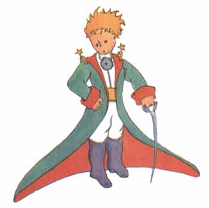

小王子首页
> 1--3 章4--6 章
7--9 章
10-12章
13-15章
16-20章
21-23章
24-25章
26-27章
小王子作者
小王子解读与分析
小王子下载（PDF版）
小王子作者专题
小王子吧
圣埃克苏佩里吧
小王子读后感集锦
《小王子》
[法] 圣埃克苏佩里
请孩子们原谅我把这本书献给了一个大人。我有一个正当的理由：这个大人是我在世界上最好的朋友。我还有另一个理由：这个大人什么都懂；即使儿童读物也懂。我还有第三个理由；这个大人住在法国，他在那里忍冻挨饿。他很需要有人安慰。要是这些理由还不够充分，我就把这本书献给这个大人曾经做过的孩子。每人大人都是从做孩子开始的。（然而，记得这事的又有几个呢？）因此，我把我的献词改为：
当我还只有六岁的时候，在一本描写原始森林的名叫《真实的故事》的书中， 看到了一副精彩的插画，画的是一条蟒蛇正在吞食一只大野兽。页头上就是那副 画的摹本。

这本书中写道：“这些蟒蛇把它们的猎获物不加咀嚼地囫囵吞下，尔后就不 能再动弹了；它们就在长长的六个月的睡眠中消化这些食物。”
当时，我对丛林中的奇遇想得很多，于是，我也用彩色铅笔画出了我的第一 副图画。我的第一号作品。它是这样的：
我把我的这副杰作拿给大人看，我问他们我的画是不是叫他们害怕。
他们回答我说：“一顶帽子有什么可怕的？”
我画的不是帽子，是一条巨蟒在消化着一头大象。于是我又把巨蟒肚子里的情况画了出来，以便让大人们能够看懂。这些大人总是需要解释。我的第二号作品是这样的：

大人们劝我把这些画着开着肚皮的，或闭上肚皮的蟒蛇的图画放在一边，还 是把兴趣放在地理、历史、算术、语法上。就这样，在六岁的那年，我就放弃了 当画家这一美好的职业。我的第一号、第二号作品的不成功，使我泄了气。这些 大人们，靠他们自己什么也弄不懂，还得老是不断地给他们作解释。这真叫孩子 们腻味。
后来，我只好选择了另外一个职业，我学会了开飞机，世界各地差不多都飞 到过。的确，地理学帮了我很大的忙。我一眼就能分辨出中国和亚里桑那。要是 夜里迷失了航向，这是很有用的。
这样，在我的生活中，我跟许多严肃的人有过很多的接触。我在大人们中间 生活过很长时间。我仔细地观察过他们，但这并没有使我对他们的看法有多大的 改变。
当我遇到一个头脑看来稍微清楚的大人时，我就拿出一直保存着的我那第一 号作品来测试测试他。我想知道他是否真的有理解能力。可是，得到的回答总是： “这是顶帽子。”我就不和他谈巨蟒呀，原始森林呀，或者星星之类的事。我只 得迁就他们的水平，和他们谈些桥牌呀，高尔夫球呀，政治呀，领带呀这些。于 是大人们就十分高兴能认识我这样一个通情达理的人。
我就这样孤独地生活着，没有一个能真正谈得来的人，一直到六年前在撒哈 拉沙漠上发生了那次故障。我的发动机里有个东西损坏了。当时由于我既没有带 机械师也没有带旅客，我就试图独自完成这个困难的维修工作。这对我来说是个 生与死的问题。我随身带的水只够饮用一星期。
第一天晚上我就睡在这远离人间烟火的大沙漠上。我比大海中伏在小木排上 的遇难者还要孤独得多。而在第二天拂晓，当一个奇怪的小声音叫醒我的时候， 你们可以想见我当时是多么吃惊。这小小的声音说道：
“请你给我画一只羊，好吗？”
“啊！”
“给我画一只羊……”
我象是受到惊雷轰击一般，一下子就站立起来。我使劲地揉了揉眼睛，仔细 地看了看。我看见一个十分奇怪的小家伙严肃地朝我凝眸望着。这是后来我给他 画出来的最好的一副画像。可是，我的画当然要比他本人的模样逊色得多。这不 是我的过错。六岁时，大人们使我对我的画家生涯失去了勇气，除了画过开着肚 皮和闭着肚皮的蟒蛇，后来再没有学过画。

我惊奇地睁大着眼睛看着这突然出现的小家伙。你们不要忘记，我当时处在 远离人烟千里之外的地方。而这个小家伙给我的印象是，他既不象迷了路的样子， 也没有半点疲乏、饥渴、惧怕的神情。他丝毫不象是一个迷失在旷无人烟的大沙 漠中的孩子。当我在惊讶之中终于又能说出话来的时候，对他说道：
“唉，你在这儿干什么？”
可是他却不慌不忙地好象有一件重要的事一般，对我重复地说道：
“请……给我画一只羊……”
当一种神秘的东西把你镇住的时候，你是不敢不听从它的支配的，在这旷无 人烟的沙漠上，面临死亡的危险的情况下，尽管这样的举动使我感到十分荒诞， 我还是掏出了一张纸和一支钢笔。这时我却又记起，我只学过地理、历史、算术 和语法，就有点不大高兴地对小家伙说我不会画画。他回答我说：
“没有关系，给我画一只羊吧！”
因为我从来没有画过羊，我就给他重画我所仅仅会画的两副画中的那副闭着 肚皮的巨蟒。
“不，不！我不要蟒蛇，它肚子里还有一头象。”
我听了他的话，简直目瞪口呆。他接着说：“巨蟒这东西太危险，大象又太 占地方。我住的地方非常小，我需要一只羊。给我画一只羊吧。”
我就给他画了。
他专心地看着，随后又说：
“我不要，这只羊已经病得很重了。给我重新画一只。”
我又画了起来。
我的这位朋友天真可爱地笑了，并且客气地拒绝道：“你看，你画的不是小羊，是头公羊，还有犄角呢。”
于是我又重新画了一张。

这副画同前几副一样又被拒绝了。
“这一只太老了。我想要一只能活得长的羊。”
我不耐烦了。因为我急于要检修发动机，于是就草草画了这张画，并且匆匆 地对他说道：

“这是一只箱子，你要的羊就在里面。”
这时我十分惊奇地看到我的这位小评判员喜笑颜开。他说：
“这正是我想要的，……你说这只羊需要很多草吗？”
“为什么问这个呢？”
“因为我那里地方非常小……”
“我给你画的是一只很小的小羊，地方小也够喂养它的。”
他把脑袋靠近这张画。
“并不象你说的那么小……瞧！它睡着了……”
就这样，我认识了小王子。
我费了好长时间才弄清楚他是从哪里来的。小王子向我提出了很多问题，可 是，对我提出的问题，他好象压根没有听见似的。他无意中吐露的一些话逐渐使我搞清了他的来历。例如，当他第一次瞅见我的飞机时（我就不画出我的飞机了， 因为这种图画对我来说太复杂），他问我道：
“这是个啥玩艺？”
“这不是‘玩艺儿’。它能飞。这是飞机。是我的飞机。”
我当时很骄傲地告诉他我能飞。于是他惊奇地说道：
“怎么？你是从天上掉下来的？”
“是的”。我谦逊地答道。
“啊？这真滑稽。”
此时小王子发出一阵清脆的笑声。这使我很不高兴。我要求别人严肃地对待 我的不幸。然后，他又说道：
“那么，你也是从天上来的了！你是哪个星球上的？”
即刻，对于他是从哪里来的这个秘密我隐约发现到了一点线索；于是，我就 突然问道：
“你是从另一个星球上来的吗？”
可是他不回答我的问题。他一面看着我的飞机，一面微微地点点头，接着说道：
“可不是么，乘坐这玩艺儿，你不可能是从很远的地方来的……”
说到这里，他就长时间地陷入沉思之中。然后，从口袋里掏出了我画的小羊， 看着他的宝贝入了神。
你们可以想见这种关于“别的星球”的若明若暗的话语使我心里多么好奇。 因此我竭力地想知道其中更多的奥秘。
“你是从哪里来的，我的小家伙？你的家在什么地方？你要把我的小羊带到 哪里去？”

他沉思了一会，然后回答我说：
“好在有你给我的那只箱子，夜晚可以给小羊当房子用。”
“那当然。如果你听话的话，我再给你画一根绳子，白天可以栓住它。再加 上一根扦杆。”
我的建议看来有点使小王子反感。
“栓住它，多么奇怪的主意。”
“如果你不栓住它，它就到处跑，那么它会跑丢的。”
我的这位朋友又笑出了声：
“你想要它跑到哪里去呀？”
“不管什么地方。它一直往前跑……”
这时，小王子郑重其事地说：
“这没有什么关系，我那里很小很小。”
接着，他略带伤感地又补充了一句：
“一直朝前走，也不会走出多远……”
1-3章4-6章7-9章10-12章13-15章16-20章21-23章24-25章26-27章